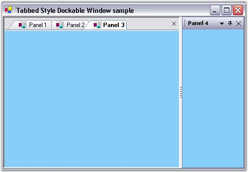

The Tabbed MDI Package provides a new Tabbed MDI layout mode (as an alternative to the default Cascade and Tiled modes), popularized by VS .NET.
We can enable and attach the dockable window into the Tabbed MDI manager during application startup using the following simple steps.
· Add 4 panels and the DockingManager to your application.
· Declare the TabbedMDIManager.
|
[C#]
private Syncfusion.Windows.Forms.Tools.TabbedMDIManager tm; |
|
[VB.NET]
Private tm As Syncfusion.Windows.Forms.Tools.TabbedMDIManager |
· Set the form's IsMDIContainer property to true. Add a form, form2 to the project.
· In the form constructor, you have to enable the dockable window into an MDIChild by calling the SetAsMDIChild method. This has to be done before calling the AttachToMdiContainer method. It will give the look and feel of the VS. NET editor with dockable tabbed window appearance.
|
[C#]
// Enables docking for panel. this.dockingManager1.SetEnableDocking(this.panel1,true); this.dockingManager1.SetEnableDocking(this.panel2,true); this.dockingManager1.SetEnableDocking(this.panel3,true); this.dockingManager1.SetEnableDocking(this.panel4,true);
// Sets dock label. this.dockingManager1.SetDockLabel(this.panel1,"Panel 1"); this.dockingManager1.SetDockLabel(this.panel2,"Panel 2"); this.dockingManager1.SetDockLabel(this.panel3,"Panel 3"); this.dockingManager1.SetDockLabel(this.panel4,"Panel 4");
// Changes docking window to MDI child window. this.dockingManager1.SetAsMDIChild(this.panel1,true); this.dockingManager1.SetAsMDIChild(this.panel2,true); this.dockingManager1.SetAsMDIChild(this.panel3,true);
// Attach MDI container to TabbedMDI manager. this.tm= new TabbedMDIManager(); this.tm.TabControlAdded+= new TabbedMDITabControlEventHandler(tm_TabControlAdded);
// Assign the MDI form into the TabbedManager MDI container. this.tb.AttachToMdiContainer(this); this.dockingManager1.VisualStyle = Syncfusion.Windows.Forms.VisualStyle.Office2003; |
|
[VB.NET]
'Enables docking for panel. Me.dockingManager1.SetEnableDocking(Me.panel1, True) Me.dockingManager1.SetEnableDocking(Me.panel2,True) Me.dockingManager1.SetEnableDocking(Me.panel3,True) Me.dockingManager1.SetEnableDocking(Me.panel4, True) 'Sets dock label. Me.dockingManager1.SetDockLabel(Me.panel1,"Panel 1") Me.dockingManager1.SetDockLabel(Me.panel2,"Panel 2") Me.dockingManager1.SetDockLabel(Me.panel3,"Panel 3")
'Changes docking window to MDI child window. Me.dockingManager1.SetAsMDIChild(Me.panel1,True) Me.dockingManager1.SetAsMDIChild(Me.panel2,True) Me.dockingManager1.SetAsMDIChild(Me.panel3,True) Me.dockingManager1.SetAsMdiChild(Me.Panel4, True) 'Attach MDI container to TabbedMDI manager. Me.tm= New TabbedMDIManager() AddHandler tm.TabControlAdded, AddressOf tm_TabControlAdded ' Assign the MDI form into the TabbedManager MDI container. Me.tb.AttachToMdiContainer(Me) Me.dockingManager1.VisualStyle = Syncfusion.Windows.Forms.VisualStyle.Office2003 |
· You can also change the appearance of the tabs by applying the TabStyle in the TabControlAdded event.
|
[C#]
// Enable the rendering for the Tabbed MDI manager tabs. private void tm_TabControlAdded(object sender, TabbedMDITabControlEventArgs args) { args.TabControl.TabStyle = typeof(TabRendererWhidbey); } |
|
[VB.NET]
'Enable the rendering for the Tabbed MDI manager tabs. Private Sub tm_TabControlAdded(ByVal sender As Object, ByVal args As TabbedMDITabControlEventArgs) args.TabControl.TabStyle=GetType(TabRendererWhidbey) End Sub |

Figure 101: Tabbed Style Dockable Window
See Also